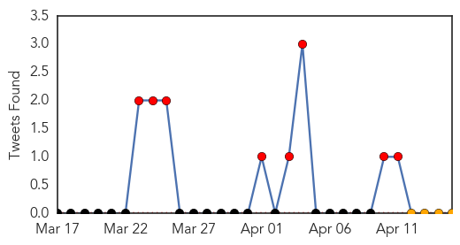
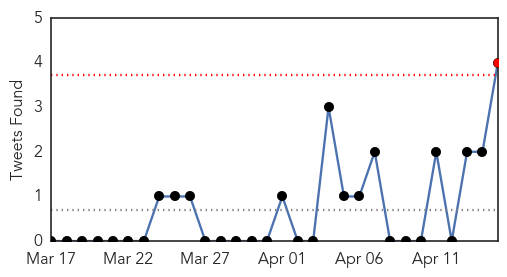
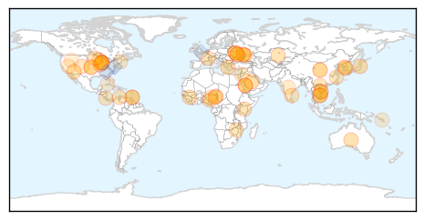
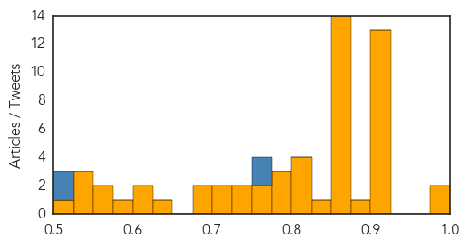

Ebola
30-Day Web Trend
26 alerts, 0 warnings

30-Day Twitter Trend
16 alerts, 0 warnings

Article Locations

Article Confidences

Top Articles:
- 1.000
- Guinea says few new Ebola cases, outbreak nearly under control
- 1.000
- Symptoms of Deadly Disease Causing Deaths in Africa
- 1.000
- Ebola Virus Outbreak in West Africa Slowing, But Still Ongoing
- 1.000
- Guinea says few new Ebola cases, outbreak nearly under control
- 1.000
- West African Ebola Outbreak May be Coming Under Control
- 1.000
- Experts cast worried eye on Ebola spread
- 1.000
- Guinea says few new Ebola cases, outbreak nearly under control
- 1.000
- Is Ebola Virus Getting Under Control?
- 0.999
- Taking preventive action to stop the Ebola outbreak in West Africa
- 0.999
- Death toll in Ebola outbreak rises to 121
- 0.999
- Ebola outbreak: EU increases medical assistance to W/A
- 0.999
- Ebola in Guinea: Dr. Sanjay Gupta reports on the outbreak
- 0.999
- Taking preventive action to stop the Ebola outbreak in West Africa - Guinea
- 0.999
- Death toll in Ebola outbreak rises to 121 - Gambia bans flights from Ebola-hit nations - Kuwait Times
- 0.999
- Guinea's first Ebola survivors return to family, stigma remains
- 0.999
- Guinea says few new Ebola cases, outbreak nearly under control
- 0.998
- Guinea Says Ebola Outbreak Almost Under Control
- 0.998
- Guinea Says Ebola Outbreak Almost Under Control
- 0.997
- WHO Warns Against Outbreak of Deadly Ebola Virus in West Africa
- 0.996
- A Swift, Effective And Bloody Killer
- 0.995
- Ebola virus outbreak in Nigeria? Nation is on high alert as nearby countries struggle with virus
- 0.992
- Ebola: SA, Guinea in united front
- 0.977
- Saskatoon woman joins Ebola containment efforts in Liberia
- 0.972
- Gambia bans flights from Ebola-hit nations
- 0.966
- CNN's Sanjay Gupta on Deadly Ebola Outbreak in Africa; Whether It Could Spread to US
- 0.959
- Gambia bans flights from Ebola-hit nations
- 0.947
- Gambia bans flights from Ebola-hit nations
- 0.897
- Gambia bans flights from ebola-hit nations
- 0.887
- Ebola: Lagos Assembly calls for public sensitisation
- 0.747
- West and Central Africa Region: Weekly Regional Humanitarian Snapshot, 8– 14 April 2014 - Nigeria
- 0.536
- With the West African Outbreak of Ebola, Sierra Leone’s Freetown Mission Run by Former Australian Rock Star Takes Preventative Measures and Makes Appeal - Crossmap Christian News
Top Tweets:
- 0.609
- @HaertlG: New Ebola story posted on website: surviving Ebola. http://t.co/bAqdbtamMR Deaths very sad, but great to hear of survivor
Unknown
30-Day Web Trend
0 alerts, 0 warnings
30-Day Twitter Trend
2 alerts, 0 warnings

Article Locations
Article Confidences
Top Articles:
- 0.998
- Camel Vaccine Could Hold The Cure For Deadly Outbreak
- 0.987
- MERS Virus Claims Yet Another Life; Death Toll Exceeds 65
- 0.917
- Chicago Tribune
- 0.917
- Chicago Tribune
- 0.917
- Chicago Tribune
- 0.917
- Chicago Tribune
- 0.917
- Chicago Tribune
- 0.917
- Chicago Tribune
- 0.917
- Chicago Tribune
- 0.917
- Chicago Tribune
- 0.917
- Chicago Tribune
- 0.911
- Japan culls 112,000 chickens after bird flu outbreak
- 0.910
- The world windows to Thailand
- 0.910
- The world windows to Thailand
- 0.900
- Get a shot to hold off the flu
- 0.883
- FAO urges countries to step up action against destructive banana disease
- 0.866
- S.Korea passenger ship with 350 on board sends distress signal
- 0.866
- Bill signed easing snap inspections of Arizona abortion clinics
- 0.866
- Germany's Merkel and Russia's Putin hold call, focus on Geneva talks
- 0.866
- U.N. chief Ban spoke to Putin, alarmed about Ukraine crisis
- 0.866
- Russia sharply criticises U.N. rights report on Ukraine
- 0.866
- Russia says deeply concerned over reports of casualties in eastern Ukraine
- 0.866
- Suspected Islamist rebels abduct over 100 Nigeria schoolgirls -teacher
- 0.866
- Russian RTS stock index down 3 pct after reports of Ukraine fighting
- 0.866
- Russia says hopes Kiev "has brains" to avoid escalation
- 0.866
- Gazprom assures Europe on gas supplies reliability
- 0.866
- Ukraine targets Russian bank for 'financing terrorists'
- 0.866
- Pro-Russian separatists in Ukraine surrender one occupied building-police
- 0.866
- Toll from Nigeria bus station bomb rises to 71 killed, 124 wounded
- 0.861
- MERS kills another expat in JeddahHealthcare
- 0.844
- 119 cases of Hand, foot, and mouth disease reported since January
- 0.820
- FAO Urges Countries to Step up Action Against Destructive Banana Disease
- 0.813
- Guinea worm: Close to eradication?
- 0.811
- PED Outbreaks Suspected in Two Colombian Regions
- 0.801
- Swine producers warned to ward off Porcine Epidemic Diarrhea virus
- 0.800
- US, Western Donors Provide $300m Towards Zim’s Health Delivery
- 0.798
- Vietnam: TB Detection Gap
- 0.786
- The Chosun Ilbo (English Edition): Daily News from Korea
- 0.767
- Colorado Territorial Correctional Facility officials confirm case of norovirus
- 0.750
- Plea to Improve Services at Chengalpattu Government Hospital
- 0.740
- Ask Dr. Hallberg: Diseases that travel the world
- 0.739
- Fears of worldwide banana shortage as killer fungus spreads
- 0.722
- L’Institut Pasteur files case over 2,000 mising samples of SARS virus
- 0.708
- Region warned against new strain of banana disease
- 0.699
- Vials of deadly SARS virus 'go missing' in France
- 0.683
- Ghana, Business Advice, Jobs, News, Business Directory, Real Estate, Finance, Forms, Auto
- 0.626
- Health district gets grant for free tick tests
- 0.618
- 'Country needs more health volunteers than doctors'
- 0.602
- Vietnam: Threat of Drug Resistant TB
- 0.576
- Disease threatens world’s bananas
Showing top 50 articles...
Top Tweets:
- 0.758
- CDC recommends flu antivirals as soon as possible for people who are very sick with flu or at high risk of serious flu complications.
- 0.757
- RT: CDC recommends flu antivirals as soon as possible for people who are very sick with flu or at high risk of serious flu complica…
- 0.717
- Presentación de tarjetas Petropar: En la presentación de ayer que tuvo lugar en el local del Ministerio de Ind... http://t.co/Kduifty9PV
- 0.509
- RT: On 13 & 14 April 2014, United Arab Emirates notified WHO of a cluster of 10 lab-confirmed MERS cases among health care workers U…
- 0.505
- RT: Post "universal flu vaccines" and pre "Hollywood-style pandemic" great to have these two at sgmliv, speakers' dinner http://…
- 0.504
- Yessss TODO negativo! üôè por primera vez en 5 a√±os no biopsia no nada! No tengo que regresar hasta el proximo a√±o al ObGyn üôèüôèüôèüôè bendecida!